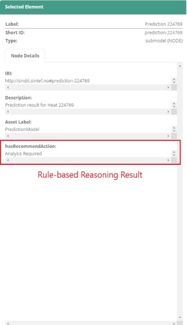

SINDIT covers aspects related to Digital Twin data representation (graph-based data structures for assets data and processes), data storage (assets and time-series data), and support for discrete/continuous simulation (e.g., estimation of production capacity).
The purpose of the framework is to provide the mechanisms to represent and store data in a way that can capture assets and time-series data, while at the same time can offer efficient access to the data and ability to use the stored data for various types of simulations (discrete/flow).
The framework is meant to help factories IT personnel in the process of representing assets and processes within factories and storing data about them, and combining the information with real-time sensor data, to facilitate analytics tasks such as simulations.
Figure 1 provides illustration of the four-layer software architecture of SINDIT along with various technologies deployed in the stack. The data layer contains all persistent storage back-ends – both those managed by SINDIT as well as those managed by third parties. The business layer contains (i) descriptions of machines and processes, (ii) services for event detection and capacity estimation, and (iii) ingestion of and federated access to relevant data sources. The application layer exposes the relevant outputs of the business logic. These can be consumed either by SINDIT’s own presentation layer or by authorized third parties. The physical assets comprise the physical layer which is not discussed here.
Figure 1: SINDIT Software Architecture
An instance of SINDIT is running at https://sindit.sintef.cloud/ where the Digital Twin of the Fischertechnik Training Factory Industry 4.0 is represented with Knowledge Graph and visualized with SINDIT dashboard. SINDIT is used a universal Digital Twin platform, that holds all relevant information about the assets from the factory and is synchronized in real-time to the physical assets. It collects both static information like documents, as well as dynamic time-series data.

Figure 2: SINDIT Dashboard showing different components of the Fischertechnik factory.
To make the architecture of SINDIT be applicable to various domains and factories, a very generic meta-model (shown in Figure 3) has been created.
 Figure 3: Generic Information Model employed in SINDIT
Figure 3: Generic Information Model employed in SINDIT
 Figure 4: Composite Structure Diagram representing different compnents of SINDIT
Figure 4: Composite Structure Diagram representing different compnents of SINDIT
SINIDT is used in SIDENOR Pilot to enable the "cognition" aspect of the Cognitive Digital Twin (CDT). Accordingly, SINDIT integrates both acyclic data(e.g., process parameters) and cyclic data (e.g., timeseries sensor data) from the production into the Semantic Knowledge Graph in order to enable a formal data representation for the CDT. The data was used by hybrid digital twins (e.g., physical models, hybrid models) to simulate and make prediction about the conditions of the ladles. Then, output of these hybrid models are integrated into SINDIT in order to support automatic reasoning and decision-making support for the human operator. Figure 5 illustrates the corresponding SINDIT knowledge graph which contain the Ladles (blue node), Ladle Use (pink), Heats (dark green), Alloy Additions (purple) and prediction models output (light green).
Figure 5: SINDIT Semantic Knowledge representing the information from SIDENOR pilot.
Figure 6: Seperate window in the dashboard showing the reasoning result..
Furthermore, domain expert knowledge for making assessment (e.g., whether to repair or demolish the ladles) is also integrated into SINDIT under the form of reasoning rules (IF-THEN rules). The reasoning result is also integrated into the knowledge graph and visualised in a separate window in SINDIT in order to support the operator to make decision on the ladles after every heat as can be seen in Figure 6.
Details about this application of SINDIT for SIDENOR pilot is reported in D2.4 - Cognitive plants through proactive self-learning hybrid digital twins.